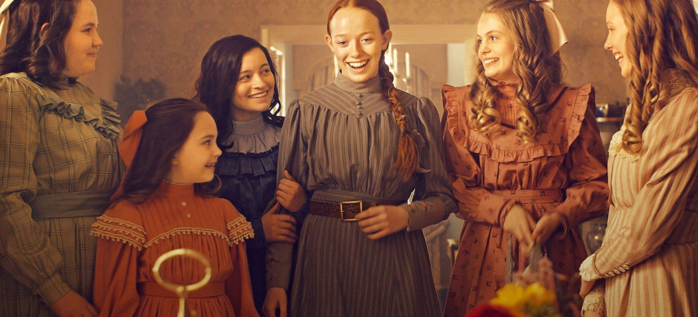
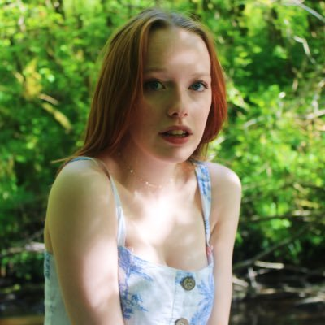

Sipnosis
La serie se remonta al año 1896 en la Isla del Príncipe Eduardo, cuando los hermanos Matthew y Marilla Cuthbert, ya de avanzada edad, deciden adoptar un niño del
orfanato para que ayude con las tareas de su hogar en la granja de Green Gables. Matthew fue a recoger al niño a una estación del tren cuando, para su sorpresa, se da
cuenta que habían enviado a Anne Shirley, una niña de 13 años. A pesar de la confusión, Matthew se lleva a Anne a Green Gables.
Anne es una niña hablantina, con una gran imaginación y con muchas habilidades, las cuales habría adquirido a lo largo de su vida. Dentro de su pasado, sus padres
murieron a los tres meses de haber ella nacido y había vivido toda su vida entre un orfanato y varias casas en las que ayudaba en los quehaceres, aunque, también
había sufrido malos tratos. Cuando llegó a Green Gables se sintió en un lugar más seguro y sin malos tratos, sin embargo, Marilla se quedó atónita al darse cuenta
que le habían traído a una niña, y desconfió de Anne. Tras perderle un broche a Marilla (que era un bien material preciado de ella) y pensar que Anne se lo había
robado, la mandó inmediatamente al orfanato, pero la brocha reaparece, yendo Matthew por Anne para llevarla de nuevo a Green Gables. Al regresar, Marilla pide perdón
a Anne por haber creído que se robó el broche y finalmente es adoptada por los Cuthbert.
Reparto
| Amybeth McNulty | (Donegal, Irlanda, 7 de noviembre de 2001) es una actriz y cantante irlando-canadiense.Es conocida por interpretar a Anne Shirley en la serie de CBC/Netflix Anne with an E, basada en la novela de 1908 Ana de las tejas verdes, de Lucy Maud Montgomery | McNulty ha actuado también en las series de RTÉ One Clean Break y Agatha Raisin2 y en la serie de BBC The Sparticle Mystery. Además, actuó en la película Morgan como la personaje principal a la edad de 10 años. | También, actuó en la película Maternal dirigida por la actriz Megan Follows como Charlie McLeod3. Actualmente esta película se encuentra en un proceso de posproducción |  | ||
| Lucas Jade Zumann | (Chicago; 12 de diciembre de 2000 )1 es un actor estadounidense. Interpretó a Milo en la película de terror Sinister 2, a Jamie Fields en la película de comedia y drama independiente 20th Century Women y a Gilbert Blythe en la famosa serie de Netflix Anne with an E. | Lucas Jade Zumann nació en el barrio de Rogers Park en Chicago, Illinois, y es el mayor de cuatro hermanos. Es judío y asistió a la escuela hebrea. Luego, en quinto grado, se mudó a la Escuela Waldorf de Chicago hasta el octavo grado, y regresó nuevamente para el duodécimo grado. Tiene una relacion con Shannon Sillivan. | ||||
| Dalila Bela | es una actriz canadiense conocida por su papel de Agent Olive en la serie Odd Squad (2014-2016) de TVOKids / PBS Kids, en las películas de Diary of a Wimpy Kid (2012) y por su labor en programas de televisión como Once Upon a Time (2015) y la serie de Netflix, Anne with an E (2017-2019). | Dalila Bela nació en Montreal, Quebec. Es de ascendencia inglesa, francesa, brasileña, panameña y española. Su padre es de Panamá y su madre es de Brasi. Tiene dos hermanos menores llamados Bruce y Raphael, que también son actores. Actualmente vive en Vancouver. | ||||
| Geraldine James | James nació en Maidenhead, Berkshire, de un padre cardiólogo.Fue educada en Downe House, una escuela independiente para niñas en Newbury, Berkshire. Después de graduarse del Drama Centre London en 1973, comenzó su carrera en el teatro. | James ha sido nominado cuatro veces al premio BAFTA TV a la mejor actriz; para Dummy (1977), La joya de la corona (1984), Band of Gold (1995) y The Sins (2000). | También ganó la Copa Volpi a la Mejor Actriz en el Festival de Cine de Venecia de 1989 por She's Been Away. | |||